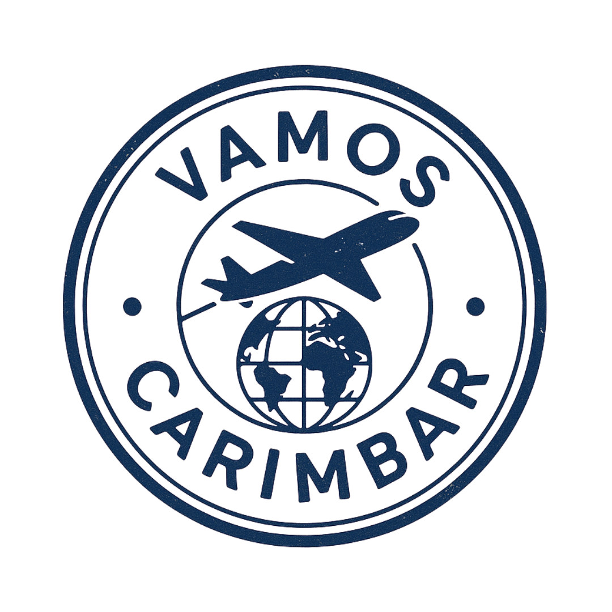
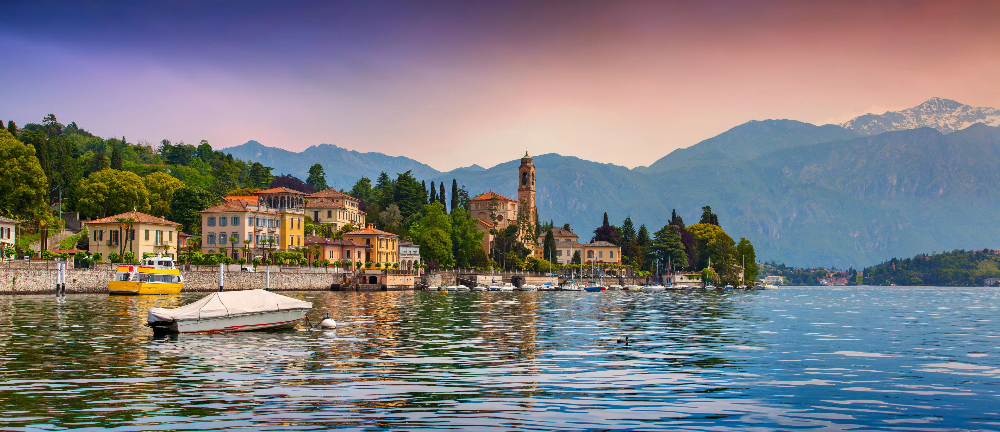
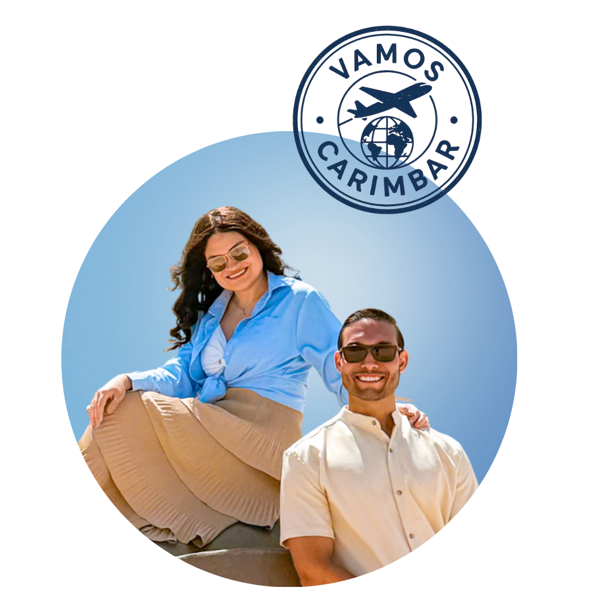

Helder e Família
Roteiro Personalizado
Itália · Ago–Set 2026
Conegliano · Lago di Como

Ato de marcar, registrar ou validar algo; deixar a prova de que atravessou uma fronteira — interna ou externa. carimbar na alma uma nova versão de si: mais expandida, com mais cultura, repertório e experiência de vida. É marcar no coração novas histórias, novos lugares e novas pessoas… carimbos que ficam pra sempre.


Sejam bem-vindos,
Helder e Família!
O caminho que vamos percorrer juntos até você embarcar para a Itália — cada etapa com prazo definido e entregáveis claros.
Apresentação do roteiro macro com opções de passeios para cada dia, perfil de viagem e escolhas de transporte.
👉 Seg 22/06 · 19h30Entrega do roteiro macro com logística dos dias e meios de transporte para aprovação e curadoria de hospedagens.
Prazo: até 3 dias pós reunião e pagamento do restanteEntrega do roteiro completo com todos os detalhes — acessível pelo site em tempo real.
Prazo: até 10 dias após confirmação e aprovação do macroDúvidas e suporte nas reservas durante período de planejamento e viagem.
Há villas e apartamentos disponíveis para convidados do casamento ou precisamos reservar hospedagem na região de Conegliano?
Como o casamento é no castelo, as melhores bases para o roteiro são:
Fica colada em Susegana. Ótimos hotéis executivos e charmosos, excelente gastronomia.
Cidade maior e muito charmosa. Fica a 35 minutos do castelo.
Qual o horário do voo no dia 05/09?
Dependendo do horário, pode ser necessário deixar o Lago di Como no final da tarde do Dia 04 e pernoitar em Milão — garante margem de segurança sem correria no dia do embarque.
Qual aeroporto de Milão chegam e qual vão embora?
Malpensa (MXP) fica ~1h30 do lago. Bérgamo (BGY) e Linate (LIN) ficam ~1h. Saber o aeroporto de chegada e de embarque define a logística de todo o roteiro — do transfer na chegada à rota de retorno.
Base de hospedagem recomendada. Uma das vilas mais equilibradas do lago — lungolago elegante, Piazza Garibaldi com cafés e vida local, sem o excesso de turistas de Bellagio. Ponto central de ferry para todas as vilas do triângulo: Bellagio, Varenna e Cadenabbia.
A "Pérola do Lago di Como" — posição única no promontório onde o lago se divide em dois braços. Ruelas medievais em degraus, flores nos parapeitos, ateliers de seda e a Salita Serbelloni, a escadaria mais fotografada do Norte da Itália. Ferryboat de 15 min de Menaggio.
Vila pequena e autêntica na margem oeste. Tem o Battistero do séc. XI (um dos mais antigos da Itália), praça com bar e uma passeggiata tranquila. Ponto de embarque para a Villa del Balbianello — barquinhos saem direto do cais.

Vila elegante e quieta da margem oeste. O Lungolago di Tremezzo é o mais bem conservado do lago — palmeiras, cadeiras coloridas, cafés com vista. Polo do Grand Hotel Tremezzo, um dos mais luxuosos da Itália. A pé de Lenno.
A mais autêntica das grandes vilas do lago. Menos turistas que Bellagio, mesma beleza. A Passeggiata degli Amanti beira o lago em nível da água — uma das caminhadas mais românticas da Itália. O Castello di Vezio (séc. XI) domina do alto com vista 360° do lago e dos Alpes.
💡 Nota logística: Villa Cipressi e Villa Monastero ficam literalmente uma ao lado da outra no waterfront de Varenna — é possível visitar as duas na mesma manhã.
Vila autêntica na margem leste, fora do circuito turístico principal. O Orrido di Bellano é uma garganta de 100 m escavada pelo rio Pioverna — a visita termina dentro de uma caverna com o som da correnteza. Única no lago. Para quem quer algo diferente das vilas.
Lugano fica na Suíça italiana — mesma língua, diferente ritmo. De Menaggio de carro: ~45 min via fronteira de Gandria (passaporte obrigatório). Moeda local: Franco Suíço (CHF), mas €uro é aceito na maioria dos estabelecimentos.
A "Riviera Suíça". Centro histórico com ruas de pedestres, lojas de luxo, cafés e o Lungolago de Lugano. Clima completamente diferente do Lago di Como — mais urbano, mais suíço. Uma tarde agradável de passeio.
O jardim mais bonito de Lugano à beira do lago. Palmeiras, flores, fonte e crianças brincando — uma tarde de descanso com vista para o Monte San Salvatore e os Alpes. Ritmo completamente diferente das vilas italianas.
O cartão postal de Lugano. Funicular de 12 minutos — no topo, vista 360° dos Alpes, do Lago di Lugano e da cidade. Uma das panorâmicas mais belas da Suíça. Restaurante no cume e trilhas para quem quiser explorar.
A cidade que dá nome ao lago. Centro histórico medieval, Duomo gótico (Cattedrale di Como, séc. XIV), galerias, cafés e o passeggiata pela margem. Diferente das vilas — movimento urbano com charme italiano intacto. Ponto de partida para a funicolare de Brunate.
A "Varanda dos Alpes". Funicolare de 7 minutos de Como — no topo, vista do lago inteiro, da cidade e dos Alpes nevados. Vila pequena e quieta com casas art nouveau e cafés. Melhor nascer do sol do Lago di Como segundo os locais.
Uma das mais belas surpresas do lago. A garganta de Nesso é um cânion profundo com cachoeira dupla, atravessado por uma ponte de pedra de origem romana. Escondido entre as casas da vila — a maioria dos turistas não chega. De carro de Menaggio ou Como.
Referência rápida para entender as opções de transporte entre as vilas.
NaviTap vs. Compra Antecipada
Pagamento por aproximação diretamente no barco, sem bilhete físico. Avise o funcionário na entrada, aproxime o cartão ao embarcar (Tap-In) e o mesmo cartão ao desembarcar (Tap-Out).
Com o mesmo cartão é possível pagar até 5 passageiros — toques em até 60 segundos.
⚡ Não funciona nos barcos rápidos (Servizi Rapidi / Hydrofoil) — esses pagam somente na bilheteria física, na hora.
· Tap-Out obrigatório no desembarque com o mesmo cartão/dispositivo do embarque.
· Sem validar a saída, o sistema cobra a tarifa máxima diária.
· A cobrança final aparece no cartão no dia seguinte.
Uma das experiências mais memoráveis do Lago di Como — a definir na reunião qual o perfil deles.
Para cada base da viagem, selecionamos hospedagens bem avaliadas, com boa localização, conforto e custo-benefício adequado ao perfil do grupo.
Obs.: Os valores apresentados podem variar conforme disponibilidade e nível no Booking. Pesquisa realizada com Nível Genius 3.
A curadoria de hospedagens será elaborada após
a reunião e definição da logística da viagem.
No coração das Colinas do Prosecco — Patrimônio Mundial da UNESCO desde 2019 — Conegliano é uma cidade medieval encravada entre vinhedos em terraço. O castelo do séc. X, as igrejas renascentistas e as ruas medievais convivem com adegas e cafés. É daqui que nasce o Prosecco DOC que o mundo inteiro bebe.
Veneto, nordeste da Itália. ~80 km a nordeste de Veneza · ~170 km a leste de Milão.
25°C–32°C. Vinhedos em plena maturação — paisagem deslumbrante nas colinas UNESCO.
De Malpensa (MXP): ~2h de carro. Treviso (TSF): ~30 min. Veneza Santa Lucia (trem): ~1h.
Castelo di Conegliano · Colinas UNESCO · Strada del Prosecco · Duomo di Conegliano
Um dos lagos mais bonitos da Europa, encravado entre os Alpes italianos a apenas 50 km de Milão. As águas azul-escuro rodeadas de montanhas, as vilas coloridas penduradas nas encostas e os jardins das villas centenárias fazem do Lago di Como um dos destinos mais fotogênicos do mundo — cenário de filmes, séries e capas de revista. Em junho, os dias têm mais de 15 horas de luz e o pôr do sol passa das 21h.
Lombardia, norte da Itália. 50 km ao norte de Milão, próximo à fronteira suíça.
22°C–30°C. Alta temporada, dias longuíssimos. Pôr do sol após as 21h. Guarda-chuva compacto na bolsa — chuva rápida é possível.
Ferry público entre as vilas (€5–8/trecho). Barco privado para experiência premium. Táxi náutico disponível.
Malpensa (MXP) ~1h30 · Bérgamo (BGY) ~1h · Linate (LIN) ~1h15
A "Riviera Suíça" — uma cidade italiana que está na Suíça. O Lago di Lugano, emoldurado pelo Monte San Salvatore e o Monte Brè, cria um dos panoramas mais espetaculares da Europa central. Mesma língua do Lago di Como, ritmo completamente diferente: mais urbano, mais cosmopolita, mais suíço. A 45 minutos de carro de Menaggio pela fronteira de Gandria.
Cantão Ticino, sul da Suíça. 45 min de Menaggio (via Gandria). Passaporte obrigatório.
24°C–30°C. Alta temporada. Movimentado e agradável. Franco Suíço (CHF) — €uro aceito na maioria.
De Menaggio: ~45 min de carro via fronteira de Gandria. Sem pedágio suíço para visitas de dia.
Monte San Salvatore · Parco Ciani · Lungolago · Centro histórico · Funicular Monte Brè
A culinária do Lago di Como é filha do lago e das montanhas. Os peixes de água doce pescados há séculos nas águas frias do Como — persico, lavarello e agoni — dominam os menus. O arroz e a polenta da Lombardia aparecem em cada tratoria, ao lado de vinhos locais e da burrata cremosa que os italianos levam muito a sério.
Lago di Como · Set 2026 · valores estimados, sujeitos a atualização
Euro (€)
Câmbio estimado: ~R$ 5,80–6,20/€
Levar algum dinheiro em espécie para cafés pequenos e ferries. Tenham pelo menos €100 cada em espécie para eventualidades.
Nomad + Wise — sem IOF
Recomendamos ter conta e saldo nos dois. Se um falhar, tem outro.
🔗 Abrir conta Wise · cupom VAMOSCARIMBARNão são obrigatórias. Em restaurantes, arredondar a conta (ex: conta de €47 → deixar €50) é bem-visto e suficiente. Em serviços premium como barco privado e guias, €10–20 é um gesto valorizado.
25°C–32°C durante o dia, 17°C–20°C à noite. Final de agosto e setembro ainda têm muito sol e calor — alta temporada no lago. Chuvas passageiras de tarde nas montanhas são comuns. Guarda-chuva compacto na bolsa resolve. Nas noites de barco e terraços, uma jaqueta leve faz diferença.
Viajar é carimbar histórias,
Boa viagem!
Este roteiro foi pensado para otimizar deslocamentos, horários e ritmo, garantindo a melhor experiência dentro do tempo disponível. Mas viagem não é um roteiro engessado — é experiência viva. Ajuste o que fizer sentido, prolongue o que encantar e adapte o dia conforme a sua energia.

Nós temos uma filosofia de vida:
"Pelo menos uma vez ao ano conhecer
um lugar que nunca fomos antes"
E o planejamento nos proporciona viver isso.